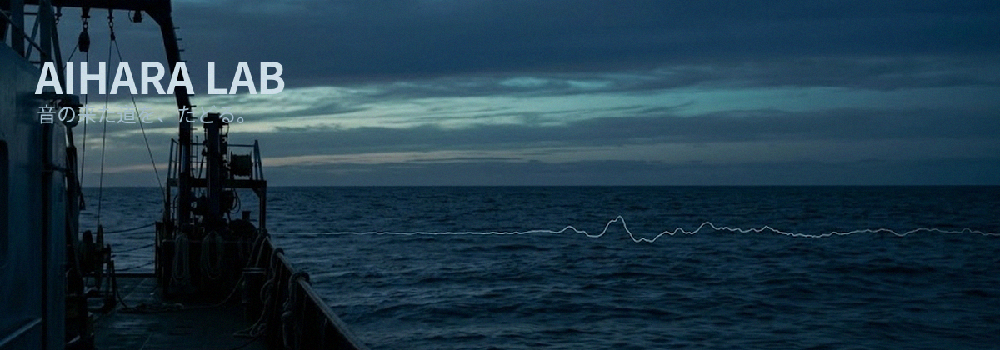

音の来た道を、たどる。
汐見台工科大学 情報理工学域 音響情報学研究室(相原研究室)のウェブサイトへようこそ。 当研究室では、水中音響学・残響解析・音場再現を柱に、「音がどこから来て、どこへ行くのか」を工学の言葉で記述することを目指しています。

最新のお知らせ
- 2021-02-20 【重要】相原准教授は当面のあいだ休職とし、研究室の新規受け入れを停止します。(お知らせ)
- 2021-02-01 南鳥島沖 長期音響観測(第4次)は予定を変更して継続中です。
- 2021-01-12 ブログを更新しました。
研究キーワード
水中音響 / 残響解析 / 音場再現 / 海洋観測 / 信号処理
本サイトは2021年2月以降、更新を停止しています。掲載情報は当時のものです。